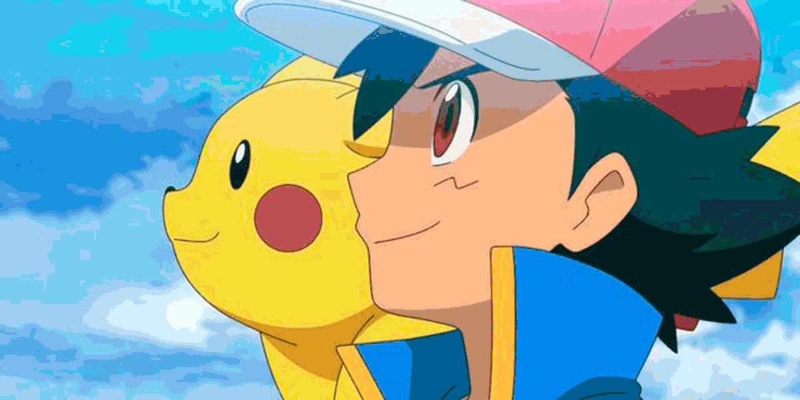

SERIE DE TV
Ash Ketchum es un muchacho entusiasta a quien le gustan los Pokémon y las batallas. Su gran pasión por los Pokémon lo ha llevado a proponerse el objetivo de convertirse en Maestro Pokémon, el más alto grado de entrenamiento Pokémon, motivo por el cual comienza un viaje en búsqueda de este título. Al cumplir 10 años, Ash tiene la oportunidad de recibir su Pokémon inicial por parte del Profesor Oak. Desafortunadamente, se quedó dormido una noche antes de su primer día de viaje y para cuando llegó al laboratorio del profesor, todos los Pokémon iniciales (Bulbasaur, Charmander y Squirtle) ya habían sido elegidos por otros entrenadores. Su insistencia por tener un Pokémon, le permitió recibir como su Pokémon inicial un Pikachu terco al que no le gusta entrar en la Pokébola/Poké Ball. Durante su recorrido por el bosque, por novatadas e intentos frustrados para capturar un Pokémon, Ash y Pikachu son atacados por una bandada salvaje de Spearow. Para escapar de los Pokémon voladores, Ash decide sumergirse a un río para no ser visto. Al otro lado del río, una chica pelirroja de 10 años llamada Misty (que más tarde sigue a Ash en su viaje con el pretexto de que le pague su bicicleta) estaba pescando Pokémon acuáticos con su caña y por error captura a Ash y su Pikachu malherido que estaban sumergidos en el agua. Al observar que la manada de Spearow seguía tras ellos, Ash toma la bicicleta de Misty para dirigirse al Centro Pokémon y así poder curar a Pikachu pero al no poder huir a pesar de viajar en bicicleta, Ash se puso a sí mismo en peligro por defender a Pikachu.
Por medio de estas demostraciones de respeto y compromiso incondicional a su Pokémon, Pikachu comenzó a sentir aprecio por Ash y su amistad se formó. Poco después en el Centro Pokémon, en una confrontación contra el Equipo/Team Rocket en donde se demostró que el gran poder de Pikachu sobrepasaba el poder de su evolución, el Equipo/Team Rocket constantemente intenta capturar al Pokémon para Giovanni, jefe de la organización. Al llegar a la Ciudad Plateada tras pasar el Bosque Verde, Ash decide participar en la Liga Pokémon. Para comenzar su travesía de recolección de medallas de gimnasio por toda la región Kanto, Brock es el primer líder de gimnasio de 15 años que es desafiado por Ash a una batalla oficial. Sin embargo, al no poder vencer a Brock, Ash decide ir a otro gimnasio. Poco después Brock entrega a Ash su primera medalla de gimnasio y deja su cargo de líder de gimnasio para viajar junto con Ash y cumplir su sueño de ser un Criador Pokémon. Desde ese día, Ash viaja por todo Kanto recolectando medallas de gimnasio en compañía de Misty y Brock. Después de conseguir las 8 medallas de los gimnasios de Kanto, Ash participa en el torneo de la Liga Pokémon en donde queda entre los 16 mejores entrenadores de la competencia.
Por medio de estas demostraciones de respeto y compromiso incondicional a su Pokémon, Pikachu comenzó a sentir aprecio por Ash y su amistad se formó. Poco después en el Centro Pokémon, en una confrontación contra el Equipo/Team Rocket en donde se demostró que el gran poder de Pikachu sobrepasaba el poder de su evolución, el Equipo/Team Rocket constantemente intenta capturar al Pokémon para Giovanni, jefe de la organización. Al llegar a la Ciudad Plateada tras pasar el Bosque Verde, Ash decide participar en la Liga Pokémon. Para comenzar su travesía de recolección de medallas de gimnasio por toda la región Kanto, Brock es el primer líder de gimnasio de 15 años que es desafiado por Ash a una batalla oficial. Sin embargo, al no poder vencer a Brock, Ash decide ir a otro gimnasio. Poco después Brock entrega a Ash su primera medalla de gimnasio y deja su cargo de líder de gimnasio para viajar junto con Ash y cumplir su sueño de ser un Criador Pokémon. Desde ese día, Ash viaja por todo Kanto recolectando medallas de gimnasio en compañía de Misty y Brock. Después de conseguir las 8 medallas de los gimnasios de Kanto, Ash participa en el torneo de la Liga Pokémon en donde queda entre los 16 mejores entrenadores de la competencia.

Página web creada por: David Bolívar - 2024